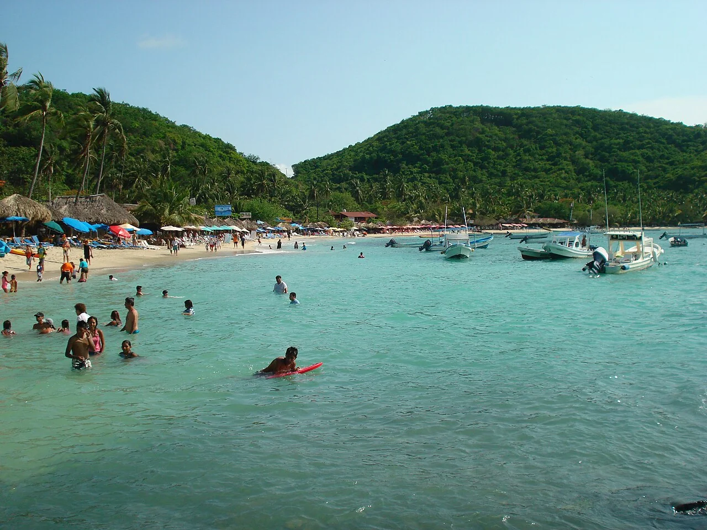

Playa Las Gatas — Zihuatanejo
Zihuatanejo, Guerrero, Mexique · snorkeling, baignade

Plage de l’autre côté de la baie de Zihuatanejo, atteinte en bateau depuis le ponton de la ville. Un récif de corail et une barrière de pierre construite par l’homme calment les vagues : Wikipédia en fait la plage de snorkeling la plus populaire de Zihuatanejo, avec des poissons tropicaux le long du brise-lames et beaucoup de coraux. Lonely Planet ajoute que les enfants peuvent s’y baigner. Selon WeatherSpark, la saison des pluies va de début juin à mi-octobre, et l’eau est autour de 29 °C en décembre et de 28 °C en janvier.
- Lieu
- Zihuatanejo, Guerrero, Mexique
- Niveau
- Variable selon les conditions
- Activités
- snorkeling, baignade
- Type d'eau
- Mer / océan
- Coordonnées
- 17.62, -101.55 (position approximative du secteur)
Dangers à connaître
- Oursins dans l’eau, signale Lonely Planet.
- Plage à l’entrée de la baie, ouverte aux brises de l’océan : les vagues y sont plus fortes, mais moins que sur les plages face au large, grâce au récif et à la barrière de pierre.
- Pas de route goudronnée : on y vient en bateau, ou par un petit sentier rocheux depuis Playa La Ropa.
- Plage encombrée de transats et de restaurants, note Lonely Planet.
Le conseil d'Ocean Buddy
Prends un bateau au ponton de Zihuatanejo : le matériel de snorkeling se loue dans les cabanes de la plage.
Ouvrir dans Ocean Buddy Télécharger sur l'App Store
Source : Fiche Ocean Buddy · décembre 2026 · d’après Lonely Planet, Wikipédia et WeatherSpark · à vérifier localement.